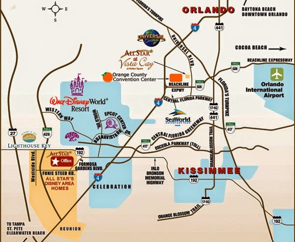
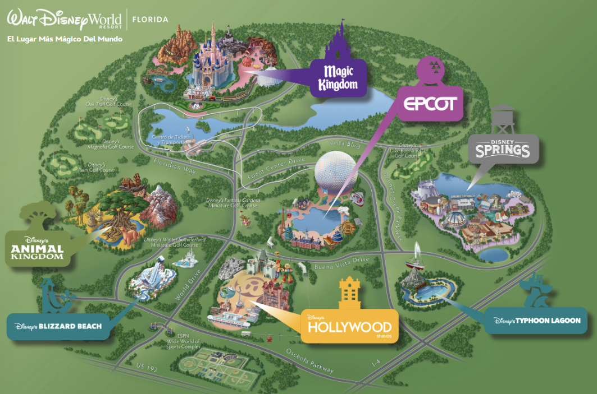

La magia te espera
Ubicación
Disney World está ubicado en el estado de Florida, en la ciudad de Lake Buena Vista, cerca de Orlando. Este impresionante complejo turístico abarca aproximadamente 101 kilómetros cuadrados, convirtiéndose en uno de los destinos más grandes y famosos del mundo. Su ubicación estratégica en el corazón de Florida lo hace fácilmente accesible desde diferentes puntos del estado, y está a solo unos minutos en automóvil desde el Aeropuerto Internacional de Orlando. Rodeado por hoteles, restaurantes y otras atracciones turísticas, Disney World es el epicentro del entretenimiento en esta región soleada y vibrante de los Estados Unidos.

El mundo magico de Disney
Disney World no solo cuenta con cuatro increíbles parques temáticos, sino que también ofrece un vibrante centro de entretenimiento: Disney Springs. El parque central, Magic Kingdom, es el corazón del complejo, reconocido por su icónico Castillo de Cenicienta y su atmósfera mágica. A su alrededor, se encuentran Epcot, Disney’s Hollywood Studios y Disney’s Animal Kingdom, cada uno con experiencias únicas que combinan diversión, fantasía y aventura.
Además, Disney Springs es el lugar perfecto para disfrutar de compras, gastronomía y espectáculos en un ambiente relajado. Este destino incluye una amplia variedad de restaurantes temáticos, tiendas exclusivas y entretenimiento en vivo, lo que lo convierte en una parada imprescindible para complementar la experiencia mágica de Disney World.
